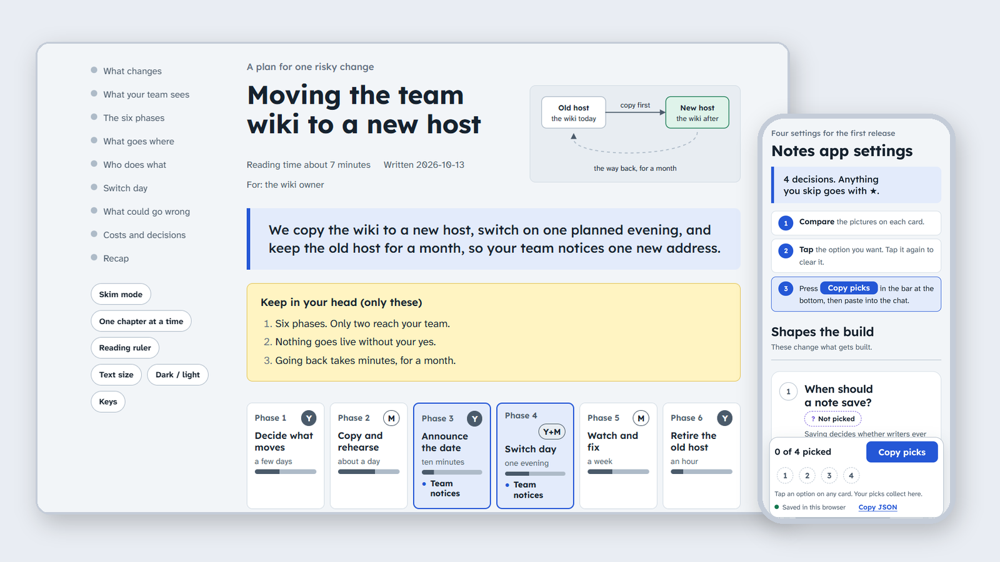

A Claude Code plugin, free and open source
Pages you can decide from
html-explainer turns what your agent did into one page you can read in minutes and decide from, checked before it reaches you.
- One page per topic: answer first, a picture per chapter, one question to decide.
- A script checks every page for structure, contrast and length before you see it.
- Free and open source. Two commands install it in Claude Code.

- What a page looks likeThe same six parts, in the same order.
- What it can makeSixteen page types, by the job they do.
- What you controlEight reader tools. Nothing moves unless you ask.
- What it promisesFive promises, each with proof.
- How to install itTwo commands, then ask for a page.
- What comes nextThe focus, and how to tell us what to fix.
Chapter 1 of 6, about 1 minute
What does a page look like?
Before this: the plugin turns what your agent did into one page you can decide from.
Every page has the same shape, so you learn it once. These are its parts, in the order you meet them.
- Answer barThe whole page in one sentence.
- Keep boxThree facts to carry, no more.
- Chapter mapOne line for each chapter.
- ChaptersA picture in each, and a remember line to close.
- RecapThe remember lines, collected.
- The askOne question, only when you must decide.
Take from this: the answer comes first, so you can stop after one sentence.
Three pages made with the plugin show the shape:
- A plan for one risky change: moving a team wiki
- A ballot: four decisions on one phone screen
- Every component, with real content
Remember: Every page opens with the answer, so you can stop reading early.
Chapter 2 of 6, about 2 minutes
What can it make?
Before this: every page opens with the answer and ends with a recap.
Sixteen page types cover the common jobs. Two more ask a group and map a system. You name the job in plain words.
| Job | Page types | Ask it like this |
|---|---|---|
| Decide | decision, compare | “Make an html explainer for the three decisions you need from me.” |
| Report | status, release, incident, pr | “Explain where we are with the project as an html explainer.” |
| Plan | spec, roadmap, research, portfolio, playbook | “Turn this spec into an html explainer I can approve.” |
| Hand over and teach | handover, teach, tour | “Write a handover page for whoever picks this up.” |
| Run a procedure | runbook | “Make a runbook page for the release steps.” |
| Tell customers | public | “Explain to customers what happens to the file they upload.” |
| Ask a group | gather, with 11 modes, one of them ballot | “Make a page that asks my team these questions and collects their answers.” |
| Map a system | atlas | “Write an architecture atlas for this codebase.” |
Take from this: name the job in plain words and the agent picks the page type.
Remember: Sixteen page types cover the common jobs, and you ask for them in plain words.
Chapter 3 of 6, about 1 minute
What does the reader control?
Before this: sixteen page types cover the common jobs, and you ask for them in plain words.
Every page comes with the same reader tools. They sit in the side rail, or in a strip above the page on a phone.
Take from this: you set how the page reads, and the page never decides for you.
Each page is one file. It works offline, on a phone and on paper. Nothing moves unless you ask.
Remember: You control how the page reads, and nothing moves unless you ask.
Chapter 4 of 6, about 1 minute
What does it promise?
Before this: you control how the page reads, and nothing moves unless you ask.
Five promises, each backed by a file you can read. The proof sits in the fold below.
- Checked before you see it. The agent runs a checker on every page and fixes each failure first.
- Readable in both themes. Text keeps a contrast of at least 4.5 to 1 in light and dark, and colour is never the only signal.
- One file, no install for the reader. Each page is a single HTML file that opens offline in any browser.
- Answers stay with the reader. Pages that ask questions save answers in the reader's own browser until they copy them out.
- Open and free. MIT licence, no account, no tracking.
Take from this: each promise names the file or link that proves it.
How we know
- Checked before you see it.
skills/html-explainer/scripts/check.mjsis the checker. It fails a page for a missing answer bar, a chapter with no picture, or a paragraph over forty words. - Readable in both themes. The same file holds the contrast rule. It works out the ratio for each text and background pair in light and in dark, and fails any pair under 4.5 to 1. It also fails a stylesheet whose done marks lose their tick, so colour is never the only signal.
- One file, no install for the reader.
skills/html-explainer/assets/template.htmlis the file every page starts from. Its styles and scripts sit inside it, so a page opens offline. Typefaces load from Google Fonts when you are online, and the page reads fine without them. - Answers stay with the reader.
skills/explainer-gather/SKILL.mddescribes the pages that ask questions. They keep answers in the reader's browser until the reader copies or downloads them. - Open and free. The LICENSE file grants the MIT licence. There is no account to make and nothing is tracked.
Remember: Every promise points to the file or link that backs it.
Chapter 5 of 6, about 1 minute
How do you install it?
Before this: the plugin is free and open source, and it needs no account.
You need Claude Code. Three steps get you your first page.
- Add the marketplace.
/plugin marketplace add ariasr47/html-explainer-skillCheck: Claude Code lists html-explainer-skill under Marketplaces.
If it fails: check that you typed the name exactly, then run the command again.
- Install the plugin.
/plugin install html-explainer@html-explainer-skillCheck:
/pluginshows html-explainer as installed.If it fails: run step 1 again, then repeat this step.
- Restart Claude Code, then ask for a page.
Make an html explainer for this spec.Check: the agent saves the page under
docs/explainers/and gives you the link.If it fails: open
/plugin, check that html-explainer is enabled, and restart again.
Take from this: every step ends with a check you can see, so you know it worked.
Node 18 or newer runs the checker. Nothing else to install.
Other ways to install
From a shell. Run both commands in any terminal where claude works.
claude plugin marketplace add ariasr47/html-explainer-skill
claude plugin install html-explainer@html-explainer-skillFor a whole team. Add the marketplace and the plugin to the repository's .claude/settings.json, so your team gets it too. The install guide shows the exact lines.
Other agents, such as Codex, Cursor, Gemini CLI or Copilot. Not yet tested in every agent.
npx skills add ariasr47/html-explainer-skillThe full guide is on GitHub: docs/install.md.
Remember: Two commands add the plugin. Restart Claude Code, then ask for a page.
Chapter 6 of 6, about 1 minute
What comes next?
Before this: two commands add the plugin, and you restart Claude Code and ask for a page.
We are keeping the plugin small. Outside readers decide what grows.
- Decision pages, checkedThe focus. Each page passes the checker before you see it.
- Tests with outside readersUnder way now.
- New page typesFrozen until outside readers ask for one.
Take from this: the next work makes decision pages better, and new page types wait for outside readers.
Remember: Checked decision pages come first, and what outside readers tell us shapes what comes next.
Recap
- Every page opens with the answer, so you can stop reading early.
- Sixteen page types cover the common jobs, and you ask for them in plain words.
- You control how the page reads, and nothing moves unless you ask.
- Every promise points to the file or link that backs it.
- Two commands add the plugin. Restart Claude Code, then ask for a page.
- Checked decision pages come first, and what outside readers tell us shapes what comes next.